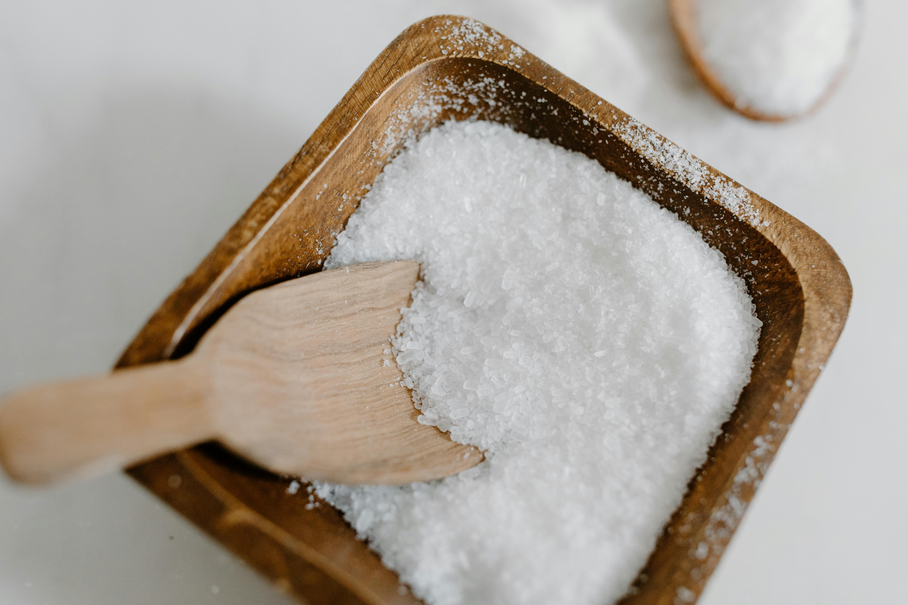

Utensílios de cozinha essenciais para iniciantes: guia prático para começares com o pé direito.

Nem todos os heróis usam capas: limão, um aliado na sua cozinha.

Salgaste demasiado a comida? 5 truques simples para salvar o prato.